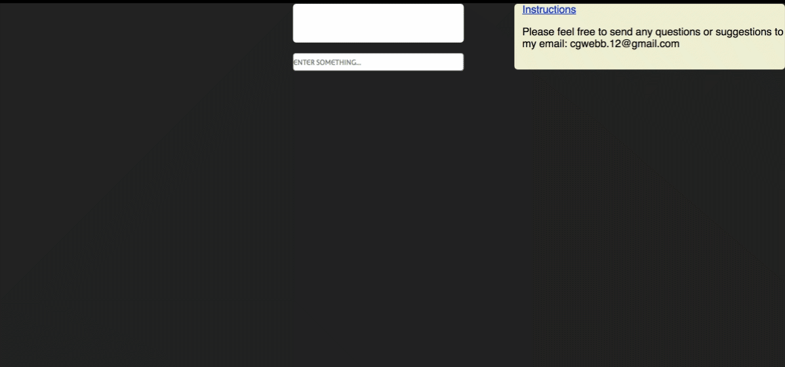
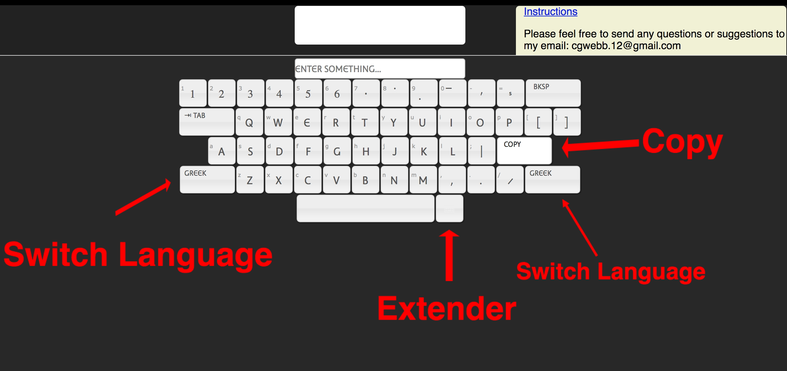

When you first open the Athena Ruby Keyboard webpage this is what you will see:

Clicking into the input area will open up the virtual keyboard:
Here is what the keybooard looks like before you press any buttons:
All of the letter keys on the initial keyboard can be manipulated with your physical keyboard. The three keys on the initial keyboard that cannot be manipulated by your physical keyboard are the extender and the two buttons to switch language layouts. Also, the "tab" key will respond to your physical keyboard, but it should have no effect on the input. It is simply there as a placeholder to make it easier to relate the keys on your physical keyboard to the keys on the virtual keyboard.